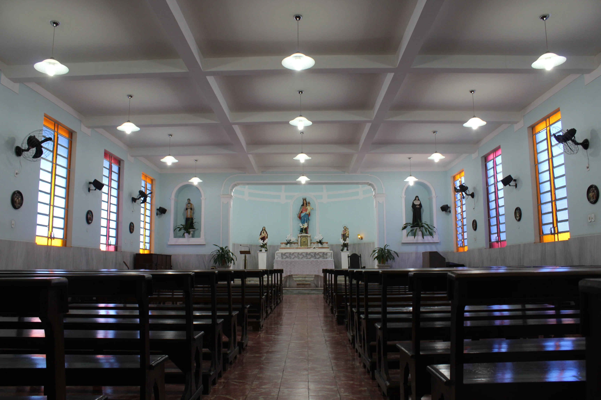

Pastoral
Pastoral Colégio Laura Vicunha

Ter uma pedagogia baseada em valores humanos, éticos e
solidários, atenta a à gestão socioemocional dos estudantes, vai muito além
de
uma formação tradicional ou carente de conceitos.
O Colégio Laura Vicunha, como pertencente à Família Salesiana, comunga dos princípios dos seus fundadores e promove ações pastorais de integração aos projetos pedagógicos, contribuindo de maneira singular com a construção de um ambiente educativo pautado na acolhida, no diálogo e na valorização da identidade e da vida das crianças e adolescentes, ajudando-os a conviver com respeito, paz, estimulando relações solidárias, de amizade, de espiritualidade e engajamento em projetos de vida.
O Colégio Laura Vicunha, como pertencente à Família Salesiana, comunga dos princípios dos seus fundadores e promove ações pastorais de integração aos projetos pedagógicos, contribuindo de maneira singular com a construção de um ambiente educativo pautado na acolhida, no diálogo e na valorização da identidade e da vida das crianças e adolescentes, ajudando-os a conviver com respeito, paz, estimulando relações solidárias, de amizade, de espiritualidade e engajamento em projetos de vida.
O compromisso de missão “bons cristãos e honestos
cidadãos",
tem como objetivo contribuir no processo de amadurecimento dos estudantes
para
que sejam responsáveis, tenham condições de fazer boas escolhas e assumam o
protagonismo de suas vidas, no entendimento de que são essenciais para a
construção de um mundo mais justo, ético e solidário.
Uma escola em pastoral ajuda a promover o conhecimento sobre a vida e os valores que tornam as pessoas mais humanas, promove ações de solidariedade, estimula a participação ativa das crianças e adolescentes, desenvolve o protagonismo infanto-juvenil, bem como contribui no processo de amadurecimento e a autonomia.
Ter uma pedagogia baseada em valores humanos, éticos e solidários, atenta a à gestão socioemocional dos estudantes, vai muito além de uma formação tradicional ou carente de conceitos.
O Colégio Laura Vicunha, como pertencente à Família Salesiana, comunga dos princípios dos seus fundadores e promove ações pastorais de integração aos projetos pedagógicos, contribuindo de maneira singular com a construção de um ambiente educativo pautado na acolhida, no diálogo e na valorização da identidade e da vida das crianças e adolescentes, ajudando-os a conviver com respeito, paz, estimulando relações solidárias, de amizade, de espiritualidade e engajamento em projetos de vida.
Uma escola em pastoral ajuda a promover o conhecimento sobre a vida e os valores que tornam as pessoas mais humanas, promove ações de solidariedade, estimula a participação ativa das crianças e adolescentes, desenvolve o protagonismo infanto-juvenil, bem como contribui no processo de amadurecimento e a autonomia.
Ter uma pedagogia baseada em valores humanos, éticos e solidários, atenta a à gestão socioemocional dos estudantes, vai muito além de uma formação tradicional ou carente de conceitos.
O Colégio Laura Vicunha, como pertencente à Família Salesiana, comunga dos princípios dos seus fundadores e promove ações pastorais de integração aos projetos pedagógicos, contribuindo de maneira singular com a construção de um ambiente educativo pautado na acolhida, no diálogo e na valorização da identidade e da vida das crianças e adolescentes, ajudando-os a conviver com respeito, paz, estimulando relações solidárias, de amizade, de espiritualidade e engajamento em projetos de vida.
O compromisso de missão de formar "bons cristãos e honestos
cidadãos", tem como objetivo contribuir no processo de
amadurecimento dos estudantes para que sejam responsáveis, tenham condições
de
fazer boas escolhas e assumam o protagonismo de suas vidas, no entendimento
de
que são essenciais para a construção de um mundo mais justo, ético e
solidário.
Uma escola em pastoral ajuda a promover o conhecimento sobre a vida e os valores que tornam as pessoas mais humanas, promove ações de solidariedade, estimula a participação ativa das crianças e adolescentes, desenvolve o protagonismo infanto-juvenil, bem como contribui no processo de amadurecimento e a autonomia.
Uma escola em pastoral ajuda a promover o conhecimento sobre a vida e os valores que tornam as pessoas mais humanas, promove ações de solidariedade, estimula a participação ativa das crianças e adolescentes, desenvolve o protagonismo infanto-juvenil, bem como contribui no processo de amadurecimento e a autonomia.
Matriculas Abertas 2025
Garanta sua vaga e venha fazer parte da nossa jornada de aprendizado.
Como forma de incentivar a iniciação cristã às crianças que desejassem, retornamos
com a
catequese no colégio Laura Vicunha neste ano de 2023. Mantendo nosso carisma salesiano,
nossos encontros contam com uma apostila de material exclusivo, dinâmicas e abordagens
interdisciplinares. Possuímos três turmas: o 5° e 6° anos se encontram nas
segundas-feiras
com a tia Miriam, às 12h. O 7° e o 8° anos com a tia Milena nas quartas-feiras às 12h; e
o
9° ano se encontra com a tia Mayra toda sexta-feira às 17h. É uma alegria colaborar para
o
início desta jornada na vida deles, que tem como centro Jesus Eucarístico!
.webp)
.webp)
.webp)
Colocando em prática os ensinamentos de Dom Bosco, nossa escola também conta
com a presença e atividade do Grupo Jovem Sol Nascente, fruto da AJS - Articulação da
Juventude
Salesiana. Toda segunda-feira o grupo acontece em dois horários para contemplar 8° e 9°
anos
e
ex-alunos. Partilhamos, convivemos e trocamos muito. O Grupo Jovem Sol Nascente também
auxilia
os eventos pastorais quando necessário, de modo que os jovens estejam sempre em contato
com
a
obra salesiana, inspirada por Deus, e falando de jovem para jovem. Dito isso,
participamos
ativamente dos Encontrões da AJS, que teve como sede a nossa casa em 2023; das festas da
Páscoa,
de Maria, dentre outras. Contamos sempre com uma juventude viva e sedenta por Cristo!


Neste ano de 2023 tivemos a alegria de voltar a participar da Missão Juvenil
Salesiana. Rumo a Cachoeiro, alunos de nossa casa foram junto à funcionárias em prol da
Evangelização e contribuição pra uma sociedade mais humana. Seguimos continuando o
legado de
Dom
Bosco, sendo o seu sonho concretizado
.webp)
.webp)

O Colégio Laura Vicunha tem como marca seus eventos pastorais. É um de nossos
principais
pilares zelar pela mobilização da fé em nossa comunidade. As apresentações como na
Páscoa, a
novena e Festa de Maria Auxiliadora, a festa da família, a Gincana Bíblica, são alguns
exemplos de eventos que fomentam o fortalecimento e a perseverança na fé dos nossos
alunos,
familiares e de toda a nossa casa. Essa é uma forma de formar nossos jovens nos caminhos
que
Dom Bosco nos ensina, e mostrar ao mundo que é possível praticar a fé em nosso dia a
dia.
.webp)
.webp)

#InstagramdoLaura
Siga o nosso Instagram e fique por dentro das novidades!
Nosso Aplicativo oficial


Redes sociais do Laura Vicunha